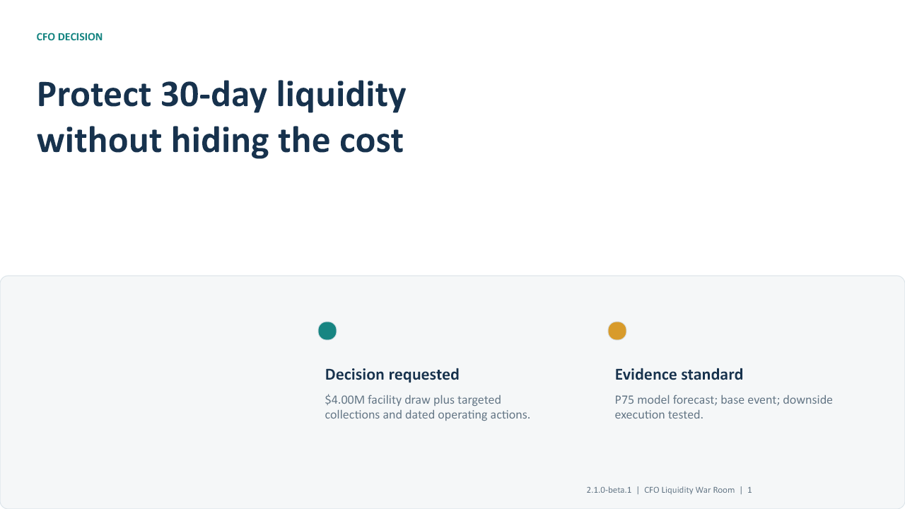

Lab A
CFO Liquidity War Room
Challenge a 30-day cash forecast, validate collection evidence, choose dated working-capital actions, govern funding and FX, and face the CFO approval decision.
Private facilitated cohort
Make, defend, and operationalize evidence-based CFO decisions under liquidity, execution, policy, and investment constraints.

The integrated experience
Lab A
Challenge a 30-day cash forecast, validate collection evidence, choose dated working-capital actions, govern funding and FX, and face the CFO approval decision.
Lab B
Transfer the discipline into a finance-transformation portfolio: choose what is funded NOW, what follows NEXT, and what Day-90 evidence permits scale.
Assessment
Teams defend assumptions, trade-offs, authority, execution realism, and evidence gates—not merely notebook outputs.
Participant outcomes
Separate contractual timing, realistic evidence, downside, and failed execution.
Balance liquidity, customer and supplier relationships, funding cost, FX protection, and authority.
Turn approval into owners, evidence, thresholds, and explicit STOP / REVISE / SCALE gates.
Available as a full-day Liquidity War Room, a separate advanced transformation capstone, or the integrated CFO Decision Lab flagship program. Cohort access includes private participant materials; instructor, answer, and assessment-calibration content remains restricted.
All workshop company, invoice, payment, facility, FX, and investment data are synthetic. Illustrative outputs are not financial advice or autonomous approvals.